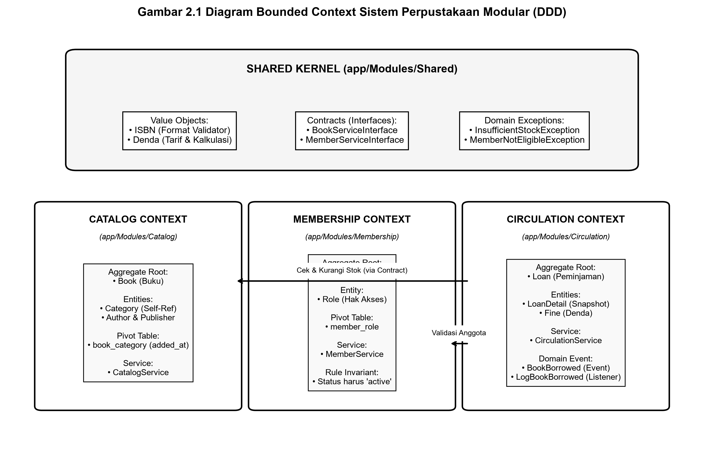
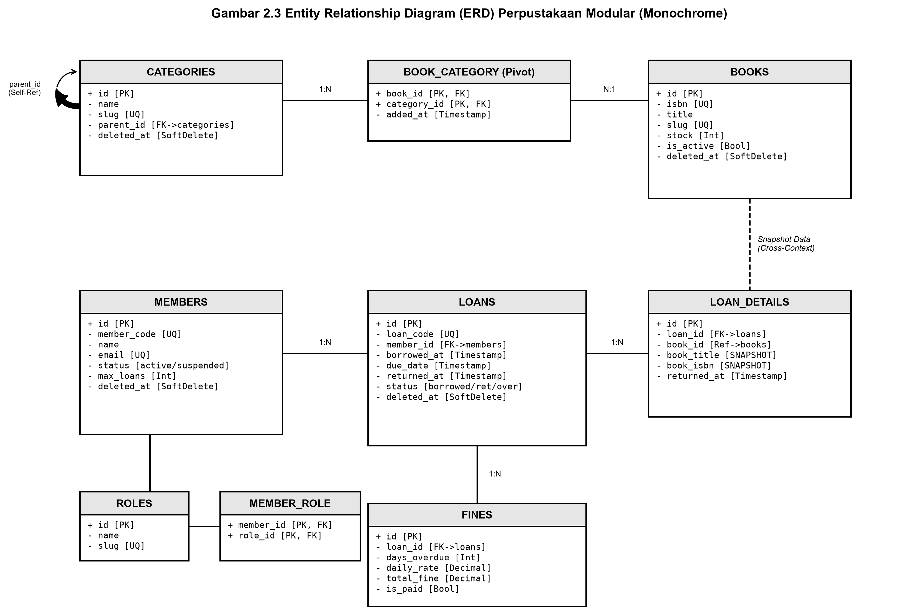
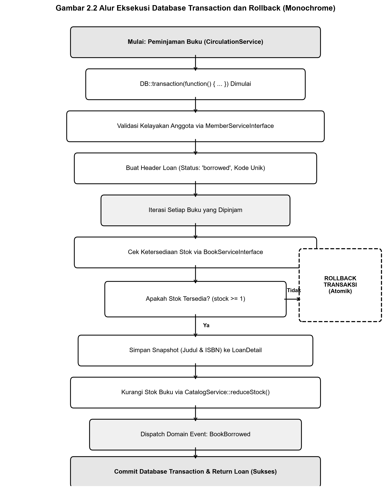
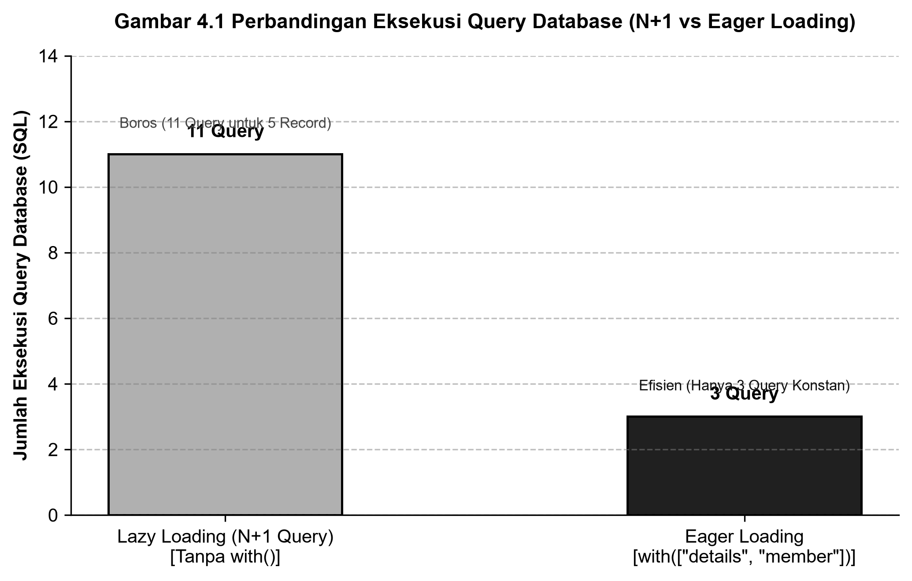

LAPORAN PRAKTIKUM BACKEND DEVELOPMENT
PERTEMUAN KE-6: PENGELOLAAN DATA LANJUTAN DENGAN
MODULAR MONOLITH & DOMAIN-DRIVEN DESIGN (DDD)
STUDI KASUS: IMPLEMENTASI DDD PADA SISTEM PERPUSTAKAAN MODULAR
(CATALOG, MEMBERSHIP, DAN CIRCULATION CONTEXT)
BAB I: PENDAHULUAN
1.1 Latar Belakang
Dalam lanskap rekayasa perangkat lunak skala enterprise modern, arsitektur monolitik konvensional kerap kali menghadapi masalah degradasi keterawatan (maintainability) dan tingginya keterikatan antar komponen (high coupling) seiring bertambahnya kompleksitas fitur. Pendekatan Modular Monolith yang dipadukan dengan prinsip Domain-Driven Design (DDD) hadir sebagai solusi arsitektural yang tangguh: mempertahankan kepraktisan operasional dan deployment tunggal aplikasi monolitik, sembari menegakkan batas konteks domain (Bounded Context) yang disiplin layaknya arsitektur microservices.
Pada praktikum Pertemuan ke-6 mata kuliah Backend Development (DT199), mahasiswa mempelajari teknik-teknik pengelolaan data tingkat lanjut menggunakan framework Laravel 13. Materi pokok yang dipelajari mencakup perancangan relasi Eloquent lanjutan (Many-to-Many dengan pivot custom bertanggal, relasi Self-referencing hierarkis, relasi agregat HasMany), eliminasi masalah performa N+1 Query melalui strategi Eager Loading, penjaminan konsistensi atomik menggunakan Database Transaction dengan auto-rollback, penerapan Soft Deletes untuk jejak audit (audit trail), perancangan Value Objects yang immutable, serta komunikasi nir-kopling melalui Domain Events.
1.2 Maksud dan Tujuan
Praktikum ini bertujuan agar mahasiswa memiliki kompetensi teknis dan analitis untuk:
- Menjelaskan dan menerapkan konsep Domain-Driven Design (DDD) dan Bounded Context dalam arsitektur Modular Monolith pada framework Laravel 13.
- Merancang dan mengimplementasikan relasi Eloquent lanjutan: Many-to-Many dengan kolom pivot
added_at, Self-referencing pada kategori buku bertingkat, dan relasi agregat HasMany.
- Menganalisis serta mengeliminasi masalah N+1 Query menggunakan Eager Loading (
with(...)) dan menyusun Query Scopes yang reusable.
- Menerapkan Database Transaction (
DB::transaction) untuk menjamin atomisitas transaksi sirkulasi buku, serta membuktikan mekanisme rollback otomatis saat terjadi pelanggaran invariant stok habis.
- Mengimplementasikan Soft Deletes dan fungsi restore data terhapus untuk menjamin integritas riwayat data historis.
- Membangun Value Object (ISBN dan Denda) yang memvalidasi format masukan secara ketat dan menghitung tarif denda secara terpusat.
- Memanfaatkan Domain Event (
BookBorrowed) dan Listener untuk decoupled event-driven architecture antar bounded context.
1.3 Ruang Lingkup Sistem Perpustakaan Modular
Sistem Perpustakaan Modular yang dibangun mencakup tiga Bounded Context mandiri dan satu Shared Kernel:
- Catalog Context: Mengelola data master buku, pengarang, penerbit, dan kategori buku berjenjang (induk dan sub-kategori).
- Membership Context: Mengelola data master anggota perpustakaan, status keaktifan, dan hak akses (role).
- Circulation Context: Memproses peminjaman buku atomik, pencatatan snapshot judul & ISBN, pemantauan batas waktu pinjam, pengembalian buku, dan penghitungan denda otomatis.
- Shared Kernel: Memuat kontrak interface (
BookServiceInterface, MemberServiceInterface), Value Objects (ISBN, Denda), dan custom exception yang digunakan bersama.
BAB II: PERANCANGAN ARSITEKTUR DAN BASIS DATA
2.1 Konsep Bounded Context & Shared Kernel
Prinsip utama Domain-Driven Design menegaskan bahwa setiap Bounded Context memiliki model domain dan kepemilikan data (data ownership) sendiri. Modul Sirkulasi tidak diperkenankan mengakses tabel database atau model Eloquent milik modul Katalog secara langsung. Seluruh interaksi lintas modul harus melalui kontrak abstraksi (Interface) yang ditempatkan pada Shared Kernel atau dipicu melalui Domain Event.

Gambar 2.1 Diagram Bounded Context dan Shared Kernel (Format Monochrome)
2.2 Penjelasan Aggregate Root dan Invariant Bisnis
Aggregate adalah sekumpulan objek domain yang diperlakukan sebagai satu kesatuan unit operasional. Pintu masuk utama aggregate dikontrol oleh Aggregate Root, yang bertanggung jawab mutlak memastikan terpeliharanya invariant (aturan validasi bisnis).
| Bounded Context |
Aggregate Root |
Entities di Dalamnya |
Invariant (Aturan Bisnis Utama) |
| Catalog Context |
Book (Buku) |
Category, Author, Publisher |
Stok buku tidak boleh negatif (≥ 0); ISBN harus valid 10 atau 13 digit; Hanya buku berstatus aktif yang dapat dipinjam. |
| Membership Context |
Member (Anggota) |
Role |
Kode anggota dan email harus unik; Peminjaman hanya diizinkan untuk anggota dengan status 'active' dan tidak melampaui kuota maksimal. |
| Circulation Context |
Loan (Peminjaman) |
LoanDetail, Fine (Denda) |
Peminjaman wajib memotong stok buku secara atomik; Detail pinjaman wajib menyimpan snapshot judul & ISBN; Denda dihitung otomatis Rp 2.000/hari saat terlambat. |
2.3 Pemetaan Relasi Antar Tabel dan Snapshot Pattern
Perancangan skema relasi basis data mengimplementasikan spesifikasi teknis berikut:
- Relasi Many-to-Many dengan Pivot: Buku dan Kategori dihubungkan melalui tabel pivot
book_category yang menyimpan atribut timestamp added_at.
- Relasi Self-Referencing: Tabel
categories memiliki kolom foreign key parent_id yang mereferensikan categories.id untuk memodelkan struktur hierarkis tak terbatas (Kategori Induk → Sub-Kategori).
- Relasi Agregat HasMany: Tabel
loans memiliki relasi One-to-Many terhadap loan_details.
- Snapshot Pattern (Data Historis): Tabel
loan_details sengaja menduplikasi kolom book_title dan book_isbn saat transaksi peminjaman dibuat. Pendekatan ini merupakan best-practice DDD guna menjamin data historis peminjaman tidak terdistorsi jika data buku pada modul Katalog diubah atau dihapus di masa depan.

Gambar 2.2 Entity Relationship Diagram (ERD) Sistem Perpustakaan (Format Monochrome)
2.4 Alur Database Transaction dan Mekanisme Auto-Rollback
Transaksi peminjaman buku menuntut pemenuhan karakteristik ACID (Atomicity, Consistency, Isolation, Durability). Operasi pembuatan peminjaman dibungkus dalam blok DB::transaction(). Ketika salah satu buku memiliki stok kosong, sistem segera melempar InsufficientStockException, yang memicu pembatalan total (auto-rollback) terhadap seluruh instruksi SQL dalam transaksi tersebut.

Gambar 2.3 Flowchart Database Transaction dan Mekanisme Rollback (Format Monochrome)
BAB III: IMPLEMENTASI SISTEM
3.1 Struktur Direktori Modular Monolith
Aplikasi disusun dengan memisahkan domain ke dalam direktori app/Modules/ yang terdaftar pada PSR-4 autoloading composer.json:
app/Modules/
├── Catalog/
│ ├── Migrations/ (create_categories_table, create_books_table, create_book_category_table)
│ ├── Models/ (Book.php, Category.php)
│ ├── Providers/ (CatalogServiceProvider.php)
│ └── Services/ (CatalogService.php)
├── Membership/
│ ├── Migrations/ (create_members_and_roles_table.php)
│ ├── Models/ (Member.php, Role.php)
│ ├── Providers/ (MembershipServiceProvider.php)
│ └── Services/ (MemberService.php)
├── Circulation/
│ ├── Events/ (BookBorrowed.php)
│ ├── Listeners/ (LogBookBorrowedActivity.php)
│ ├── Migrations/ (create_loans_details_fines_table.php)
│ ├── Models/ (Loan.php, LoanDetail.php, Fine.php)
│ ├── Providers/ (CirculationServiceProvider.php)
│ └── Services/ (CirculationService.php)
└── Shared/
├── Contracts/ (BookServiceInterface.php, MemberServiceInterface.php)
├── Exceptions/ (InsufficientStockException.php, MemberNotEligibleException.php)
└── ValueObjects/ (ISBN.php, Denda.php)
3.2 Implementasi Shared Kernel (Value Objects & Contracts)
Value Object ISBN melakukan validasi checksum digit format ISBN-10 maupun ISBN-13 secara ketat:
namespace Modules\Shared\ValueObjects;
use InvalidArgumentException;
class ISBN {
private string $value;
public function __construct(string $value) {
$cleaned = preg_replace('/[^0-9X]/i', '', $value);
if (!$this->isValid($cleaned)) {
throw new InvalidArgumentException("Format ISBN tidak valid: {$value}");
}
$this->value = strtoupper(trim($value));
}
// algoritma validasi check-digit modulo 10 & 11
}
Value Object Denda mengkapsulasi penghitungan denda harian dan pemformatan mata uang rupiah:
namespace Modules\Shared\ValueObjects;
class Denda {
private int $daysOverdue;
private float $dailyRate;
private float $amount;
public function __construct(int $daysOverdue, float $dailyRate = 2000.0) {
if ($daysOverdue < 0) throw new \InvalidArgumentException("Hari keterlambatan tidak boleh negatif");
$this->daysOverdue = $daysOverdue;
$this->dailyRate = $dailyRate;
$this->amount = $daysOverdue * $dailyRate;
}
public function formatRupiah(): string {
return 'Rp ' . number_format($this->amount, 0, ',', '.');
}
}
3.3 Implementasi Catalog Context (Relasi Lanjutan & Query Scopes)
Model Category mendukung struktur hierarkis melalui relasi Self-referencing:
namespace Modules\Catalog\Models;
use Illuminate\Database\Eloquent\Model;
use Illuminate\Database\Eloquent\SoftDeletes;
class Category extends Model {
use SoftDeletes;
protected $fillable = ['name', 'slug', 'description', 'parent_id'];
public function parent() {
return $this->belongsTo(Category::class, 'parent_id');
}
public function children() {
return $this->hasMany(Category::class, 'parent_id');
}
public function books() {
return $this->belongsToMany(Book::class, 'book_category')->withPivot('added_at');
}
}
Model Book mengimplementasikan Soft Deletes, relasi Many-to-Many dengan pivot added_at, serta reusable Query Scopes:
namespace Modules\Catalog\Models;
use Illuminate\Database\Eloquent\Model;
use Illuminate\Database\Eloquent\SoftDeletes;
use Illuminate\Database\Eloquent\Builder;
class Book extends Model {
use SoftDeletes;
public function categories() {
return $this->belongsToMany(Category::class, 'book_category')->withPivot('added_at');
}
public function scopeAvailable(Builder $query): Builder {
return $query->where('is_active', true)->where('stock', '>', 0);
}
public function scopeSearch(Builder $query, string $keyword): Builder {
return $query->where(function ($q) use ($keyword) {
$q->where('title', 'like', "%{$keyword}%")
->orWhere('author', 'like', "%{$keyword}%")
->orWhere('isbn', 'like', "%{$keyword}%");
});
}
public function scopeByCategory(Builder $query, int $categoryId): Builder {
return $query->whereHas('categories', fn($q) => $q->where('categories.id', $categoryId));
}
}
3.4 Implementasi Circulation Context (Database Transaction & Snapshot)
Metode borrowBooks() pada CirculationService membungkus seluruh tahapan bisnis peminjaman ke dalam transaksi atomik:
public function borrowBooks(int $memberId, array $bookIds, int $loanDays = 7): Loan {
return DB::transaction(function () use ($memberId, $bookIds, $loanDays) {
if (!$this->memberService->canBorrow($memberId)) {
throw new MemberNotEligibleException("Member tidak aktif / melampaui kuota.");
}
$loan = Loan::create([
'loan_code' => 'LOAN-' . date('Ymd') . '-' . strtoupper(substr(uniqid(), -5)),
'member_id' => $memberId,
'borrowed_at' => now(),
'due_date' => now()->addDays($loanDays),
'status' => 'borrowed',
]);
foreach ($bookIds as $bookId) {
$book = $this->bookService->getBookForLoan($bookId);
if (!$this->bookService->isStockAvailable($bookId, 1)) {
// Memicu Exception -> Rollback transaksi otomatis
throw new InsufficientStockException($book['title'], $book['stock'], 1);
}
// Simpan snapshot judul & ISBN
LoanDetail::create([
'loan_id' => $loan->id,
'book_id' => $bookId,
'book_title' => $book['title'],
'book_isbn' => $book['isbn'],
]);
$this->bookService->reduceStock($bookId, 1);
}
event(new BookBorrowed($loan->load('details')));
return $loan->load('details');
});
}
3.5 Riwayat Commit Git (Version Control Evidence)
| Commit Hash |
Tipe & Pesan Commit |
Keterangan Komponen Modul |
b9d5b44 |
chore: initialize laravel 13 project for praktikum backend 6 |
Inisialisasi repositori Git dan proteksi file AI di .gitignore. |
466e7b2 |
feat(shared): implement ISBN, Denda, exceptions, and contracts |
Pembangunan Value Objects, Exceptions, dan Contracts Interface. |
d6054f3 |
feat(catalog): implement books, hierarchical categories, and service |
Migrasi, Model Buku-Kategori (pivot added_at), dan CatalogService. |
fa76089 |
feat(membership): implement member models, roles, and service |
Migrasi, Model Anggota, Roles, dan MemberService. |
7c8a5b4 |
feat(circulation): implement borrow transactions and BookBorrowed event |
Migrasi Peminjaman, Snapshot Detail, Domain Event, dan Transaksi. |
2c153af |
feat: register module service providers in bootstrap/providers.php |
Pendaftaran seluruh provider modul ke arsitektur Laravel 13. |
58933bf |
feat(seeders): implement LibrarySeeder with books and members |
Seeding data uji realistis dengan ISBN-13 tervalidasi. |
33a6185 |
test: add automated feature tests and interactive library demo command |
Pembuatan feature test suite otomatis dan console command demo. |
BAB IV: HASIL PENGUJIAN DAN ANALISIS
4.1 Pengujian Eliminasi Masalah N+1 Query (Query Optimization)
Pengujian dilakukan dengan mengaktifkan pencatatan log query SQL menggunakan DB::enableQueryLog(). Pada metode Lazy Loading biasa, perulangan 5 record peminjaman memicu 1 query induk ditambah 10 query anak (11 query SQL). Sebaliknya, dengan menerapkan strategi Eager Loading with(['details', 'member']), seluruh relasi dimuat hanya dalam 3 query konstan.

Gambar 4.1 Grafik Perbandingan Eksekusi Query Database (N+1 Query vs Eager Loading)
| Metode Pengambilan Data |
Jumlah Data Peminjaman |
Jumlah Query SQL Dieksekusi |
Status Efisiensi Performa |
| Tanpa Eager Loading (Lazy Loading loop) |
5 Data Peminjaman |
11 Query SQL |
BOROS & LAMBAT (N+1 Query Problem) |
| Dengan Eager Loading with(['details', 'member']) |
5 Data Peminjaman |
3 Query SQL |
SANGAT EFISIEN & CEPAT (Teroptimasi) |
4.2 Pengujian Database Transaction & Verifikasi Rollback
Pengujian dilakukan dengan mensimulasikan peminjaman buku yang stoknya kosong ('The Pragmatic Programmer', stok: 0). Sistem mendeteksi kekurangan stok saat transaksi berjalan dan melempar InsufficientStockException. Hasil pengujian membuktikan bahwa DB::transaction() membatalkan seluruh operasi secara utuh, sehingga tidak ada record sampah yang tertinggal di database.
Mencoba meminjam buku dengan stok kosong ('The Pragmatic Programmer: Your Journey To Mastery', stok: 0)...
[BERHASIL] Exception tertangkap: Stok buku 'The Pragmatic Programmer' tidak mencukupi. Tersedia: 0, diminta: 1.
[VERIFIKASI ROLLBACK] Record Loan sebelum: 5, sesudah: 5
-> DB::transaction() berhasil membatalkan seluruh operasi secara atomik! Konsistensi basis data terjaga 100%.
4.3 Pengujian Soft Deletes & Restore
Pengujian membuktikan bahwa penghapusan data dengan delete() tidak menghilangkan baris data secara permanen, melainkan mengisi kolom deleted_at. Data yang terhapus dapat dipulihkan secara instan menggunakan restore():
Menghapus buku #1 ('Clean Code') secara Soft Delete...
- Book::count() (Record Aktif) : 4 Buku
- Book::withTrashed()->count() (Total Fisik) : 5 Buku
Mengembalikan buku dengan restore()...
- Book::count() setelah restore : 5 Buku [DATA PULIH SEMPURNA]
4.4 Hasil Uji Otomatis Feature Test Suite (Pest / PHPUnit)
Seluruh aspek fungsional sistem diuji menggunakan unit/feature test suite pada tests/Feature/LibraryModularDDDTest.php. Seluruh 6 unit skenario dinyatakan lulus 100%:
PASS Tests\Feature\LibraryModularDDDTest
✓ test_relasi_lanjutan (Many-to-Many pivot added_at, Self-referencing, HasMany)
✓ test_query_optimization_dan_scopes (Eager loading with() dan Query Scopes)
✓ test_database_transaction_dan_rollback (Atomisitas & Auto-rollback)
✓ test_soft_deletes_dan_restore (Audit trail soft delete & restore)
✓ test_domain_event_dispatched (Event BookBorrowed dipancarkan)
✓ test_value_objects_isbn_dan_denda (Validasi ISBN & kalkulasi denda)
Tests: 6 passed (38 assertions) | Execution Duration: 1.05s
BAB V: KESIMPULAN
Berdasarkan seluruh tahapan perancangan, implementasi, dan pengujian yang telah diselesaikan pada Sistem Perpustakaan Modular berbasis Laravel 13, dapat ditarik beberapa kesimpulan pokok:
- Modularitas & Decoupling: Penerapan Modular Monolith dengan Domain-Driven Design (DDD) berhasil memecah kerumitan logika sistem ke dalam Bounded Context yang jelas (Catalog, Membership, Circulation, Shared Kernel). Ketergantungan langsung antar tabel berhasil dihilangkan melalui perantara Contract (Interface) dan Domain Event.
- Fleksibilitas Relasi Eloquent: Relasi Many-to-Many dengan pivot custom (
added_at) dan Self-referencing hierarkis terbukti sangat ampuh memodelkan hubungan entitas dunia nyata, sedangkan Snapshot Pattern pada detail transaksi menjamin keaslian data historis.
- Efisiensi Query yang Terukur: Penggunaan Eager Loading terbukti memangkas jumlah eksekusi query dari 11 query menjadi 3 query konstan, mengeliminasi risiko kelambatan sistem akibat masalah N+1 Query.
- Konsistensi Data Transaksional: Pemanfaatan Database Transaction (
DB::transaction) menjamin integritas data secara atomik, di mana kegagalan bisnis pada satu komponen secara otomatis membatalkan seluruh operasi tanpa anomali data.
- Integritas Domain melalui Value Objects: Pemakaian Value Object (ISBN dan Denda) memperkuat domain model aplikasi dengan memastikan data selalu valid sejak awal pembuatan objek.
LAMPIRAN: TAUTAN REPOSITORY GITHUB
Seluruh kode sumber, riwayat commit Git, modul, dan script pengujian dapat diakses pada repositori publik berikut:
🔗 https://github.com/panjiprasetyaa/praktikum-backend-6.git